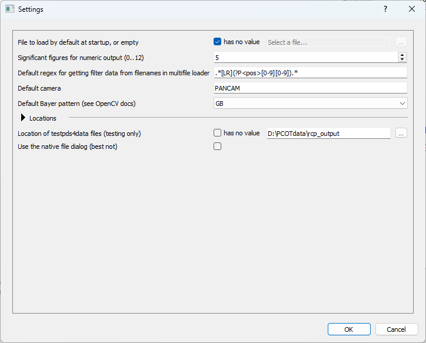
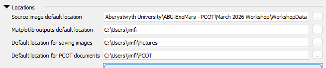
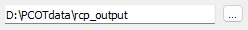
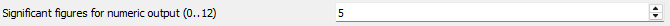
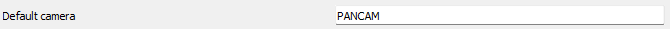
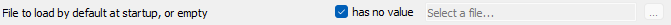
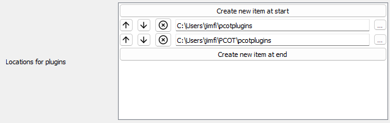

The settings dialog
This dialog can be opened with the Settings option in Edit menu on the main window. It contains global settings for PCOT, which are common to all documents.

{kind=link}
These are saved in a file called pcot_config.yaml in the user's
home directory.
Sections, and types of value
Some settings are inside subsections, which can be opened and closed by clicking on the arrow:

{kind=link}
There are several different types of setting, each of which are discussed below.
Simple types
file or directory values appear as text boxes with a button to open a file or directory dialog:

numeric values appear as a "spin box"; you can either type the value or use the up/down buttons. The caption gives the range of acceptable values:

text values are just a text box:

Nullable values
Some settings can have a special "null" value - in other words, they might not have a value at all. A good example is the file to load at startup. Such values have a box next to them. When this is checked, the setting has no value, and the associated control (one of the simple types described above) is disabled. Any value stored in that control will not be used and will not be saved until the box is unchecked.

List types
Some settings consist of lists of values, as shown below.

{kind=link}
Each individual value is one of the types discussed above. Values can be removed by clicking the cross or moved towards the start or end of the list using the buttons. New values can be created at either end using the appropriate buttons, and will be set to appropriate defaults.
Settings
Most of these settings are dealt with elsewhere in the documentation, but I'll cover a few here:
- File to load at startup is a PCOT file automatically opened when PCOT starts, which is useful if you are only working on one particular script for the time being.
- Default regex for getting filter data is used by the Multifile loader to work out which filter is being used for a particular image from the filename.
- Default camera is the default camera to set in the multifile loader and elsewhere. We don't check that the camera actually exists in the cameras directory, so make sure you get this right if you use it.
- Default Bayer pattern specifies the Bayer pattern to use to debayer (demosaic) colour images.
In the Locations section:
- Locations for plugins is a list of directories scanned for PCOT plugin files.
- List of macro and favourite archives is a list of PCOT files which have all their favourites and macros imported automatically when a new document is created.